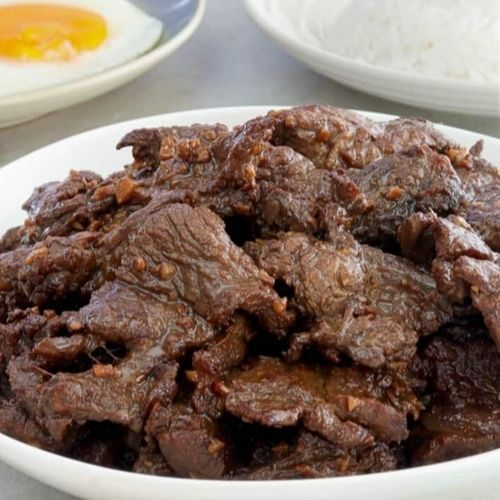

Filipino dishes you can make for breakfast! Don't see something that you highly recommend? Send a suggestion in the SUGGESTION tab!
| FOOD |
STEPS |
INGREDIENTS |
|
GARLIC FRIED RICE
- TOTAL TIME: 20 MINUTES
- SERVINGS: 4
STEP #1: Prepare ingredients.
STEP #2: Using a large skillet, heat oil in medium-high heat. Put in garli and ground pork, and start stirring. Wait for a golden brown color to the garlic.
STEP #3: Pour in the cooked rice and stir.
STEP #4: Season to your liking and mix for 3 minutes until you like it.
-
Link to picture: Yummy!
|
- 2 tbsp vegetable oil
- 2 tbsp ground pork
- 1 ½ tablespoons chopped garlic
- 4 cups cooked white rice
- ground black pepper
- 1 ½ teaspoons garlic salt
|
|
LUMPIA
- TOTAL TIME: 1 hour 10 minutes
- SERVINGS: 6
STEP #1: On a dry surface, lay several lumpia wrappers and cover with a damp towel so that they won’t dry up.
STEP #2: In a bowl, mix beef, pork, onion, green pepper, and carrot together.
STEP #3: Once done making the meat mixture, scoop up 2 tbsp of it and place along the center of lumpia wrapper. Fold accordingly. Repeat as much as wanted.
STEP #4: In a skillet, heat oil in medium to medium-high heat until oil is 365 to 375 degrees F. Fry folded lumpia until evenly brown. Serve with flash.
-
Link to picture: Ooo!
|
- 1 (12 ounce) package lumpia wrappers
- 1 pound ground beef
- ½ pound ground pork
- ⅓ cup finely chopped onion
- ⅓ cup finely chopped green bell pepper
- 1 quart oil for frying
- ⅓ cup finely chopped carrot
|
|  |
BEEF TAPA
- TOTAL TIME: more than a day (including marination)
- SERVINGS: May vary
STEP #1: Make a mixture of soy sauce, calamansi juice, garlic, sugar, salt, and pepper in a bowl. Stir until salt and sugar are dissolved.
STEP #2: Add beef into mixture and coat to marinade. Marinade overnight.
STEP #3: After marination, heat canola oil in a pan. Add the marinated beef.
STEP #4: Cook until lightly brown and/or caramelized. Serve.
-
Link to picture: Yum!
|
- Beef
- Calamansi juice
- Freshly minted garlic
- Sugar & Soy Sauce
- Salt & Pepper
- Canola oil
|